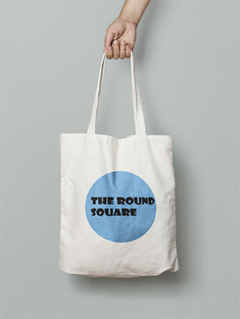
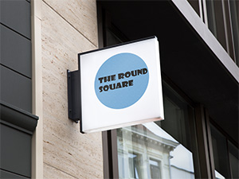

Door de komst van de ‘fast fashion’ wisselen goedkope collecties elkaar heel snel af. Die kledij is trendgevoelig en na een jaar vaak al niet meer in. Het is een vicieuze cirkel waardoor je steeds nieuwe kleding blijft bijkopen.
Kwalitatieve en verantwoorde kleding die op zoek gaat naar een tweede leven.
We leven in een wereld waar we voorzichtig moeten omspringen met onze grondstoffen, wist je bijvoorbeeld dat:
Vaak vind je echt originele en unieke stuks die je in een andere winkel niet zal vinden. Tweedehands kledij is ook duurzamer dan nieuwe kledij.
Naast het aanbod proberen we ook in alle andere aspecten duurzaamheid voorop te zetten, zo kiezen we bewust om geen gebruik te maken van plastic verpakking en bieden we de mogelijkheid om pakketjes naar Gent, Antwerpen en Brussel met de fiets te laten leveren! (zie levering)
Dankzij de gebruiksvriendelijke webshop en levering aan huis maken we het voor jou heel eenvoudig en leuk om duurzaam te shoppen!
Heb je vragen of opmerkingen? Laat het ons dan weten, we helpen je met veel plezier verder.
